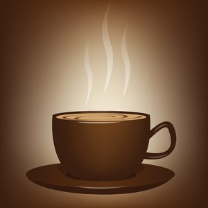

Three designed objects
Coffee Cup
Coffee cup is a well designed object necessary in everyday use. Coffee Cup is a container that coffee and espresso-based drinks are served in. It is typically made of glazed ceramic, roughly cylinder in shape, while some are made of stainless steel insulator with lid. Coffee cup always have a single handle to hold hot drinks.